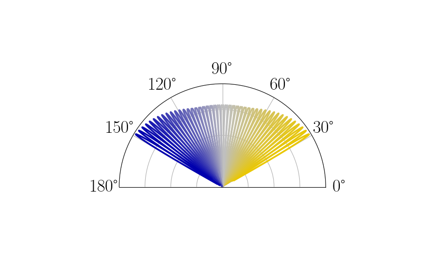
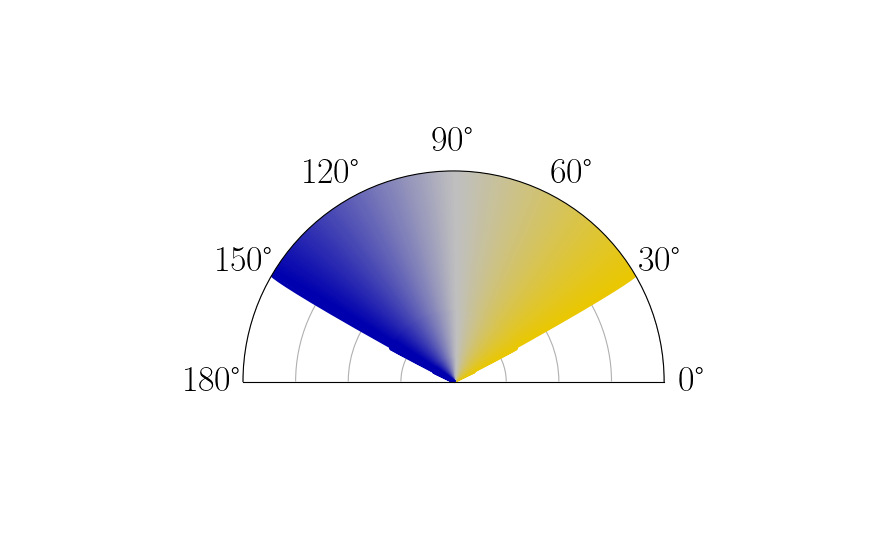
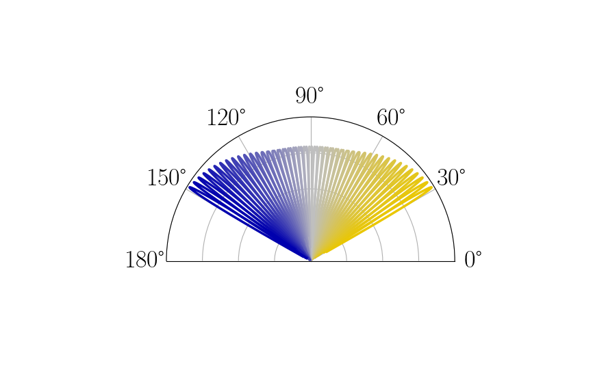
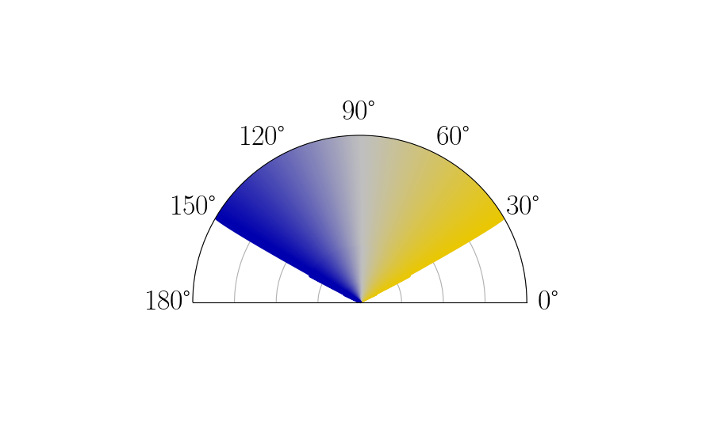

Codebook Construction
The codebook objects in mlcomm intend to make organization of the beamforming vectors each. Each beamforming vector is also an object Node containing many useful attributes that relate it to it’s position in the graph. The main user customizable parameters include:
Number of antenna elements in your Uniform Linear Array (ULA)
Number of RF chains for the hybrid analog-digital configuration
Number of streams (currently defaults to a single stream)
The extent of the angular coverage specified in the minimum and maximum angles
The plots below are generated using the functions contained in mlcomm/tests/codebook_tests.py.
Binary Codebook
For the BinaryHierarchicalCodebook, the user must specify the depth, which dictates the final number of narrow beams. For example, a depth of 6 generates 64 narrow beams at the lowest level.
from mlcomm.codebooks import *
cb_graph = BinaryHierarchicalCodebook({'depth':6, 'num_elements' : 64, 'num_rf_chains' : 32, 'num_data_streams' : 1, 'min_max_angles_degs' : (30,150)})
Now we show off the construction. Each codebook has a base set at each level


We may also view the hierarchy and what a path for zooming in may look like for two narrow beamforming patterns.

Ternary Codebook
We further augment the binary codebook to construct TernaryHierarchicalCodebook, first specify the number of broad beamforming vectors, num_initial_non_overlapping and the depth.
from mlcomm.codebooks import *
cb_graph = TernaryPointedHierarchicalCodebook({'num_initial_non_overlapping' : 5, 'depth' : 4, 'num_elements' : 128, 'num_rf_chains' : 32, 'num_data_streams' : 1, 'min_max_angles_degs' : (30,150)})
The codebook first fans out from the broad beamforming vectors

 



Working backward from the narrowest beam, there is a corresponding broad beam for each narrow one. This is difficult to see in the figures, so we show a subset of these below. Note the overlap between the broader beams.
We are now able to zoom out at each pointing angle with the varying beamwidth.